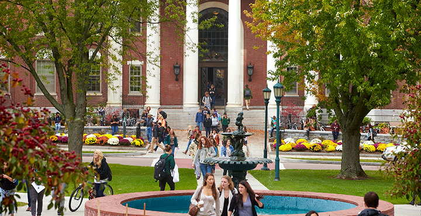
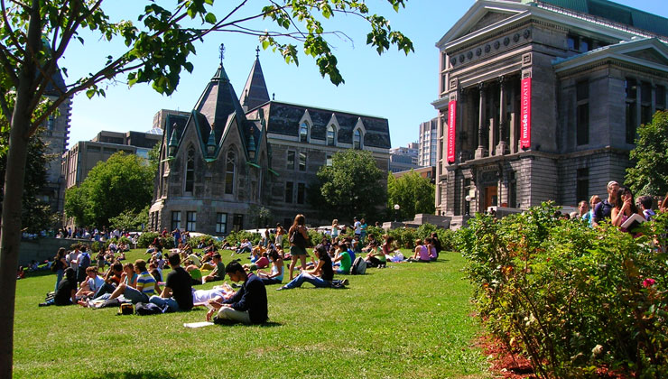

We Build Careers
نظام تحصيلي در كانادا به چه شكل است؟
نظام تحصيلي در سرتاسر كانادا از استاندارد بسيار بالائي برخوردار ميباشد. دانشگاهها، كالجهاي عمومي و كالجها ـ دانشگاه از منابع مختلف بودجه خود را تأمين ميكنند مانند دولت، شهريه، هزينههاي قرارداد و غيره. كانادا مراكز تحصيلي و آموزشي خصوصي نيز دارد كه بدون كمكهاي دولتي به فعاليت خود ادامه ميدهند.
اكثر مراكز تحصيلات عاليه دوره زبان انگليسي را نيز ارائه ميدهند. اين مراكز آموزشي در كليه استانهاي كانادا وجود دارند. اكثر انستيتوهاي فرانسه زبان در كبك قرار دارند و تنها تعداد محدودي از آنها در ساير استانهاي كانادا به فعاليت مشغول هستند.
دانشگاهها
دانشگاههاي كانادا بخاطر كيفيت بسيار بالاي آموزشي و پژوهشي از معروفيت و اعتبار بينالمللي برخوردار هستند. كليه دانشگاهها بدون توجه به محل، اندازه يا رشته تحصيلي از كيفيت آموزشي بسيار بالائي برخوردار ميباشند. دانشگاههايي كه از منابع دولتي استفاده ميكنند عضو انجمن دانشگاهها و كالجهاي كانادا (Aucc) هستند و وبسايت آن: www.aucc.ca ميباشد.
دانشگاههاي كانادا دورههاي 3 يا 4 ساله كارشناسي (ليسانس) و دورههاي كارشناسي ارشد و دكتري را نيز ارائه ميدهند. جهت ادامه تحصيل در دوره كارشناسي ارشد (فوقليسانس) داشتن ليسانس 4ساله با معدل3 (75 درصد) الزامي ميباشد. دوره 4ساله را غالباً ليسانس Honours (عالي) مينامند. در سال چهارم اين دوره دروس تخصصي براي دانشجويان تدريس ميشود و آنها را براي ورود به دوره كارشناسي ارشد (فوقليسانس) آماده ميسازد.
سال تحصيلي از سپتامبر تا آوريل ميباشد (دو نيم سال 4 ماهه). بعلاوه اين، بعضي از دانشگاهها ترم بهاره (2 ماهه) و ترم تابستاني (2ماهه) يا ترم 4 ماهه تابستاني را براي دانشجويان مهيا ميسازند. گرچه سپتامبر ماه آغاز سال تحصيلي ميباشد ولي براي بعضي از رشتهها در بعضي دانشگاهها ميتوان در ماه ژانويه و بعضي وقتها در ماه مه ثبتنام كرد. دانشجوي انتقالي از شانس بيشتر براي شروع در ژانويه يا ماه مه برخوردار .است
دانشجويان در هر نيمسال 5 درس (كرس) را انتخاب ميكنند. براي هر رشته كلاس سه ساعته آموزشي در هفته برگزار ميگردد. بعضي دورهها بويژه دورههاي مهندسي و علوم به كار در آزمايشگاه نياز دارند. بيشتر درسها (كرس) 3 واحد دارند. بعضي رشتهها كه 2 نيمسال طول ميكشد 6 واحد خواهند داشت. يك نيمسال يا هر ترم (معمولاً 5 درس دارد) داراي 15 واحد است و دو نيم سال برابر با 30 واحد ميشود و اين بدان معني است كه دوره 4 ساله داراي 120 واحد است.
كليه دورههاي مهندسي و بيشتر دورههاي علوم يا بازرگاني دورههاي 4 ساله ميباشند. بيشتر دورهها داراي درسهاي اصلي و درسهاي انتخابي هستند كه دانشجو در طول دوره آنها را ميگذراند. بعضي از دورهها مانند دوره مهندسي از درسهاي انتخابي كمتري برخوردار ميباشند.
بيشتر دانشگاهها دورههاي تعاوني (عملي) را براي دانشجويان خود فراهم ميكنند و اين به معناي آنست كه قبل از فارغالتحصيلي دانشجو ميتواند مدتي را در شركت يا سازمان كار عملي كند و تجربه لازم را بدست بياورد. دورههاي كاري معمولاً بعد از سال اول يا دوم آغاز ميشود. بعضي از دورههاي تعاوني (عملي) فقط براي كساني كه تابعيت كانادا را دارند مهيا ميباشد. براي اين كار عملي معمولاً حقوق پرداخت ميشود ولي اين حقوق ناچيز ميباشد.
.انتقال بين دانشگاهها برمبناي رشته و واحد انجام ميگيرد

(Community) كالجهاي عمومي
اين كالجها در پاسخ به نيازهاي تربيت نيروي انساني براي صنايع كانادا، بخش دولتي و نيازهاي تحصيلي براي فارغالتحصيلان مدارس حرفهاي و افراد بالغ تأسيس گرديدند. اين كالجها گواهينامه و ديپلم 1،2 يا 3ساله به دانشجويان خود اعطاء ميكند. بيشتر دورهها شامل دورههاي صنعتي ميباشد. كالجهاي عمومي در كانادا متعلق به انجمن كالجهاي عمومي كانادا (Accc) ميباشند و وبسايت آن: www.accc.ca است. بعضي از اين كالجها دورههاي كارشناسي يا كارشناسي كاربردي به دانشجويان خود اعطاء مينمايند.
سال تحصيلي در اينگونه كالجها از سپتامبر آغاز ميگردد و تا ماه مه (دو نيم سال 4 ماهه) ادامه پيدا ميكند. بعضي از كالجها ترم تابستاني را براي دورههاي خاص نيز ارائه ميكنند. آغاز رسمي سال تحصيلي در سپتامبر است و بعضي رشتهها در بعضي كالجها در ژانويه يا ماه مه آغاز ميشوند. برنامههاي تحصيلي در اين كالجها برنامههاي مورد نياز ميباشند و انتخابي نيستند. در مقايسه با دانشگاهها ساعات كلاسها در اين كالجها طولانيتر ميباشد. براي بيشتر دروس خود دانشجو بايد بطور مستقل به مطالعه بپردازد.
بعضي از كالجهاي عمومي به ارائه برنامههاي تعاوني (دورههاي عملي) ميپردازند كه باعث ميشود دانشجو بتواند قبل از فارغالتحصيلي كار در شركت يا سازمان را تجربه كند. اين دوره عملي بعد از سال اول يا دوم آغاز ميشود. بعضي از دورههاي تعاوني (عملي) تنها براي خود كانادائيها ميباشد. بعضي از اين كالجها موافقتنامه انتقال دانشجو در بعضي از دورهها را با بعضي از دانشگاههاي خاص منعقد نمودهاند.
خيلي از دانشجويان ابتدا دوره كارشناسي (ليسانس) را در دانشگاه به اتمام ميرسانند و سپس براي آموزش در دورههاي خاص صنعتي وارد اين كالج ميشوند. بعضي از كالجهاي عمومي به ارائه مدرك ديپلم فوقليسانس ميپردازند كه براي ورود به آن نياز به مدرك ليسانس يا معادل آن ميباشد.
كالج ـ دانشگاه
كالج ـ دانشگاه تركيبي از دورههاي كارشناسي (ليسانس) و آموزش كالج عمومي ميباشد. اينگونه مراكز اين امكان را براي دانشجويان فراهم ميسازند كه وارد دوره ليسانس يا ديپلم تخصصي شوند. بعضي از دورههاي ديپلم تخصصي (بعد از اتمام آن) براي دانشجويان اين امكان را فراهم ميسازد كه مستقيماً به سال سوم دوره ليسانس وارد شوند و اين به شرطي است كه دانشجو نمره حد نصاب را كسب كرده باشد. كالج ـ دانشگاه دورههاي حرفهاي و گواهينامه مربوطه را به دانشجويان خود اعطاء ميكند.
كالجهاي خصوصي حرفه و پيشه (فني و حرفهاي) و انستيتوهاي آموزشي
كالجهاي خصوصي (كه به كالجهاي حرفه و پيشه معروف هستند) و انستيتوهاي خصوصي آموزشي مجاز هستند كه بدون دريافت كمكي از دولت به فعاليت بپردازند. اين نوع كالجها و انستيتوها سالهاست كه در كانادا به فعاليت اشتغال دارند و از استاندارد بالائي برخوردار هستند كه مورد تأئيد كارفرماهاي كانادائي ميباشد. بعضي از اين انستيتوها توسط خود صنايع اداره ميشوند يا اينكه ارتباط نزديكي با صنعت خاص يا زمينه حرفه و پيشه دارند. بيشتر اين كالجها و انستيتوها به ارائه گواهينامههاي آموزشي در زمينههائي مانند نفت و گاز و فنآوري اطلاعات ميپردازند. بعضي از دورهها تنها از طريق اينگونه كالجها ارائه ميشود مانند (زيبائي، آرايش مو و غيره…).
براي كسب اطلاعات بيشتر ميتوانيد به سايت ذيل مراجعه كنيد:
www.nacc.ca
چه زماني بايستي كار خود را آغاز كنم؟ برنامهريزي مقدماتي…
مسير شغلي شما در آغاز دبيرستان كه انتخاب رشته ميكنيد آغاز ميگردد. در هنگام انتخاب رشته دقت كنيد كه رشتهاي را انتخاب نماييد كه مطابق با شغلي كه در نظر داريد باشد يا اينكه دست شما را براي انتخاب حرفه آتي باز بگذارد.
در سال آخر دبيرستان و در آغاز ژانويه بايستي شروع به فرستادن تقاضا براي دانشگاههاي كانادا بكنيد. در زمان تقاضا نيازي به نمرات نهائي نيست. نمرات ميانسال زماني فرستاده ميشود كه آنرا از مدرسه گرفته باشيد و نمرات ثلث آخر معمولاً بعد از اخذ پذيرش از يك مركز آموزش عالي فرستاده ميشود. ارزيابي مربوط به پذيرش غالباً برمبناي نمرات سال نهم، دهم و يازدهم و نمرات ميانسال سال دوازدهم انجام ميشود. نمرات نهائي بايد بلافاصله بعد از دريافت از مدرسه فرستاده شود. تا پايان ماه سپتامبر (در سال آخر دبيرستان) بايستي فرمهاي تقاضا را تكميل كرده باشيد و آنرا قبل از اتمام ضربالاجل تعيين شده بفرستيد.
در چه رشتهاي بايد به تحصيل بپردازم؟ انتخاب حرفه…
اگر مايل هستيد بدانيد چه مشاغلي در كانادا از محبوبيت بيشتري برخوردار هستند ميتوانيد به سايتهاي ذيل مراجعه نماييد:
www.canlearn.ca
www.schoolfinder.com
اگر مطمئن نيستيد در چه رشتهاي ميخواهيد تحصيل كنيد ميتوانيد به يك مركز آموزش عاليه متوسط يا بزرگ مراجعه كنيد. در آنجا يك مشاور تحصيلي به شما كمك خواهد كرد تا بتوانيد رشته تحصيلي كه انعطافپذيري زيادي را ارائه ميكند انتخاب نمائيد. در داخل دانشگاه يا كالج ميتوانيد دوره تحصيلي را عوض كنيد. شما ممكن است دوره عمومي هنر يا دوره عمومي علوم را انتخاب كنيد كه از اين طريق ميتوانيد دروس مختلفي را انتخاب نماييد و در سال دوم به انتخاب رشته اصلي مبادرت نماييد. خيلي از دانشجويان بعد از سال اول اقدام به تغيير رشته تحصيلي خود ميكنند.
اگر نمرات شما در حد نصاب دانشگاه نباشد ميتوانيد براي اخذ پذيرش از كالجها اقدام كنيد. اگر در كالج نمرات خوبي كسب كنيد ميتوانيد از آنجا وارد دانشگاه شويد يا ميتوانيد از كالج مربوطه ديپلم آن كالج را بگيريد كه اين ديپلم براي پيدا كردن شغل در صنعت خاص كافي خواهد بود.
مدارك مورد نياز براي ورود به كالجهاي عمومي و دانشگاهها
كالجهاي عمومي و دانشگاهها با يكديگر رقابت دارند و از استاندارد بالائي برخوردار ميباشند و از اينرو تنها دانشجوياني را ميپذيرند كه داراي نمرات خوبي باشند. بطور كلي براي دوره كارشناسي (ليسانس) بايستي شرايط مورد نياز زبان، شرايط علمي و شرايط مربوط به رشته تحصيلي را برآورده سازيد. براي اطلاعات بيشتر درباره حداقل شرايط ورود به كالجها و دانشگاهها بايستي با اين مراكز مكاتبه نماييد. در ذيل به شرايط كلي ورود به كالجها و دانشگاهها ميپردازيم:
شرايط مربوط به زبان
مراكزي كه برنامههاي تحصيلي آنها به زبان انگليسي است:
تافل كتبي 550 (كامپيوتري 213) يا 580 (237) يا 6 تا 7 I ELTS يا 5/4 تا 5/5 Can-Test
بعضي انستيتوها دانشجويان ممتاز را بدون داشتن تافل ميپذيرند و قبل از شروع دوره تحصيلي دوره آموزشي زبان انگليسي (ESL) را براي دانشجويان خود برگزار ميكنند. بيشتر مراكز تحصيلي قبل از شروع برنامههاي تحصيلي به برگزاري كلاسهاي زبان انگليسي و پيش دوره تحصيلي اقدام ميكنند
براي خارجيان توصيه ميشود كه پذيرش مشروط براي يك رشته تحصيلي داشته باشند كه بدان وسيله ميتوانند به مسئول ويزا نشان بدهند كه آنها داراي نمرات كافي هستند و نشاندهنده آن است كه شما ميخواهيد تحصيلات خود را ادامه داده و از وضعيت مالي مناسب براي ادامه تحصيلات برخوردار هستيد. البته كليه دانشگاهها پذيرش مشروط اعطاء نميكنند.
بيشتر دانشگاهها و كالجهاي عمومي نياز به نمرات سه سال آخر دبيرستان دارند. نمرات ميانترم و نمرات نهائي در صورت موجود بودن همراه با رونوشتي از ديپلم دبيرستان بايد ارائه گردد. ايرانيان نياز به داشتن ديپلم كامل دبيرستان دارند (12 سال تحصيلي).
مدارك مورد نياز براي بعضي از رشتههاي دانشگاهي و كالجها
1- براي رشته مهندسي: رشته مهندسي نياز به رياضيات (حسابان، جبر و هندسه) فيزيك، شيمي و انگليسي دارد.
2- براي رشتههاي علوم: (دورههاي 4ساله): نياز به رياضيات و دو تا از دروس ذيل احتياج است: فيزيك، شيمي يا زيستشناسي
3- براي مديريت بازرگاني يا رشتههاي تجاري (دوره 4 ساله): نياز به رياضيات (حسابان) و انگليسي دارد. دانشجوياني كه فاقد رياضي هستند بايستي در دوره پيشدانشگاهي 1ساله شركت كنند يا در ليسانس بازرگاني يا اقتصاد ثبتنام كنند.
رشتههائي كه قبل از پذيرش نياز به مطالعات دانشگاهي دارند
رشته پزشكي: بعد از ليسانس 3 يا 4 ساله (علوم پايه) يك دوره 4 ساله (دوره باليني) بايد گذرانده شود (در مجموع دوره 7 الي 8 ساله). بيشتر دانشكدههاي پزشكي نياز به امتحان MCAT و انجام مصاحبه حضوري دارند.
در كانادا دوره ماقبل پزشكي وجود ندارد و بيشتر دانشجويان بعد از اتمام دوره ليسانس (علوم پايه) وارد دانشكده پزشكي ميشوند. پزشكي يك دوره رقابتي ميباشد و تنها دانشجويان خارجي كه داراي صلاحيتهاي علمي بالائي باشند (كه اين تنها 9درصد كل متقاضيان را شامل ميگردد) براي وارد شدن به دانشكده پزشكي پذيرفته ميشوند.
رشته حقوق: دوره 3 ساله بعد از گذراندن دوره ليسانس 2،3 يا 4 ساله (در كل دوره 5 الي 8 ساله). رشته حقوق نياز به گذراندن امتحان LSAT دارد.
رشته دندانپزشكي: دوره 4 ساله بعد از گذراندن 30 واحد دانشگاهي (2 سال) در كل يك دوره 6 ساله
در كانادا پيش دورهاي براي دندانپزشكي در سطح دانشگاه وجود ندارد. تقاضا براي ورود به اين دوره بايد در جهت پذيرش در رشته ليسانس علوم باشد. به امتحان DAT نياز ميباشد كه اين امتحان در سال دوم دانشگاه يا كالج بايد گذرانده شود. وارد شدن به رشته دندانپزشكي خيلي رقابتي ميباشد.
رشته فيزيوتراپي: بيشتر دانشگاهها و كالجها قبل از پذيرش نياز به مطالعات 1 يا چند ساله در سطح دانشگاهي دارند.
دانشجويان انتقالي: كارنامه دبيرستاني و نمرات شما از مركز تحصيلي فعلي مورد بازنگري قرار ميگيرد. بيشتر دانشگاهها قبل از اعطاء مدرك خود به دانشجويان خواستار آن هستند كه شما حداقل 60 واحد (2سال) را در آن دانشگاهها بگذرانيد.
انتخاب دانشگاه يا كالج جهت دامه تحصيل

قبل از انتخاب دانشگاه يا كالج ميبايستي تا حد امكان اطلاعات كافي درباره آن دانشگاه يا كالج كسب كنيد. بعضي از رشتهها فقط در چند دانشگاه كه تعداد آن محدود است تدريس ميگردد و بعضي ديگر از رشتهها بهطور وسيع در دسترس است.
با بررسي وبسايتهاي ذيل ميتوانيد به فهرست دانشگاههاي مختلف دسترسي پيدا كنيد:
براي اخذ مدرك دانشگاهي: www.aucc.ca
براي كالج يا دانشگاهها: www.studyincanada.com
براي كالج يا دانشگاهها: www.schoolfinder.com
براي كالج يا دانشگاهها: www.schoolsincanada.com
دانشگاه (كالج) بزرگ يا كوچك را ترجيح ميدهيد؟
دانشگاهها يا كالجهاي بزرگ و متوسط رشتههاي تحصيلي متنوع و وسيعي را عرضه ميكند و ميتوان در اواسط سال تحصيلي به تغيير رشته مبادرت كرد. دانشگاهها يا كالجهاي بزرگ يا متوسط از لحاظ بينالمللي شناخته شدهتر ميباشند. با اينحال بعضي از مراكز آموزشي كوچك اقدام به ارائه دورههائي ميكنند كه در آن پيشگام هستند. اين گونه مراكز در اين دورههاي تخصصي از معروفيت جهاني برخوردار هستند. در انستيتوهاي كوچكتر ميتوانيد استادان و همكلاسيان خود را بهتر بشناسيد. براي جستجو كردن اندازه انستيتوها ميتوانيد به وبسايت ذيل مراجعه كنيد:
www.studyingcanada.com
در كدام بخش از كشور ميخواهيد زندگي كنيد؟ شهر بزرگ يا كوچك را ترجيح ميدهيد؟
از آنجائيكه كليه انستيتوها در كانادا از كيفيت تحصيلي بالائي برخوردار هستند انتخاب محل زندگي ميتواند فاكتور مهمي در موفقيت و آسايش شما باشد. براي كسب اطلاعات درباره شهرها و مناطق كانادا ميتوانيد به وبسايت ذيل مراجعه كنيد:
www.canada.gc.ca
آب و هواي كانادا
آب و هواي كانادا منطقه به منطقه و فصل به فصل با يكديگر فرق دارد. در شمال كانادا
درجه حرارت تنها براي چند ماه به بالاي صفر درجه ميرسد و بيشتر كانادائيها در مرزهاي جنوبي كشور زندگي ميكنند كه در اين مناطق فصل بهار معتدل است، تابستانهاي گرم و پائيز دلپذيري دارد كه حداقل 7 ماه از سال را شامل ميشود. البته بدن شما به راحتي با هرگونه آب و هوا خود را تطبيق خواهد داد و كليه ساختمانها و وسايل حمل و نقل از سيستمهاي گرمائي مناسب برخوردار ميباشند.
ساحل غربي ـ بريتيش كلمب
ساحل بريتيش كلمبيا از بهترين آب و هوا در كانادا برخوردار است. شهرهاي پرجمعيت كانادا يعني ونكوور و ويكتوريا از تابستانهاي نسبتاً خشك و معتدل و زمستانهاي باراني برخوردار ميباشند. برف بندرت در اين نواحي ميبارد و اگر هم ببارد همانروز آب ميشود.
فلات چمنزار : Manitoba , Saskatchewan – Alberta
فلات چمنزار كانادا از كوههاي راكي به درياچه بزرگ (Great lakes) امتداد پيدا ميكند. در اينجا زمستانهاي سرد و تابستانهاي گرم متداول ميباشد. بارانهاي بهاره و پائيز خشك شرايطي را فراهم كرده است كه باعث ميشود فلات چمنزار يكي از نواحي حاصلخيز براي رشد غلات جهان باشد.
كبك و اونتاري
شمال اونتاريو، اتاوا و مونترال هوائي مشابه فلات چمنزار (Prairies) را دارند. بيش از نيمي از جمعيت كانادا نزديك به Great lakes را دارند. بيش از نيمي از جمعيت كانادا نزديك به Great lakes يا در امتداد رودخانه سنتلورنس زندگي ميكنند. در جنوب اونتاريو تابستانها بلندتر از مكانهاي ديگر در كانادا ميباشد. مقدار بارش باران سال به سال از نوسان كمي برخوردار است و در حدي مطلوب قرار دارد كه آنجا را به بهترين ناحيه كشاورزي در كانادا تبديل كرده است. ميانگين درجه حرارت روزانه از اواسط 10 تا 20 و از اواسط جون تا اواسط سپتامبر متغير است كه موج گرما در طول هفته به 30 درجه سانتيگراد نيز ميرسد. در فصل پائيز روزها گرم و آفتابي و مطلوب ميباشد و شبها خنك ميباشد.
كانادا حوزه آتلانتيك New Foundcand، Prince Edward Island، New Brunswick و Nova Scotia
آب و هواي استانهاي فوق در ساحل شرقي بواسطه اقيانوس اطلس معتدل ميباشد. اقيانوس اطلس به اندازه اقيانوس پاسيفيك گرم نميباشد كه اين باعث ميگردد استانهاي آتلانتيك به گرمي بريتيش كلمبيا نباشد ولي به اندازه نواحي داخلي كانادا سرد يا خيلي گرم نميگردد. در فصل زمستان برف و باران ميبارد و تابستانها گرمائي مطلوب دارد كه به ندرت خيلي گرم ميشوند.
آيا در جستجوي دانشگاه يا كالجي هستيد كه در رشتهاي پيشگام باشد؟
اغلب از خود ميپرسيم رتبهبندي دانشگاهها يا كالجها به چه صورت است يا كدام انستيتو بهترين است يا در رشته خاصي پيشگام ميباشد؟ در بيشتر موارد جواب مشخصي وجود ندارد چونكه كيفيت تحصيلات در يك حوزه انستيتوهائي كه در حوزه خاصي فعاليت ميكنند در سرتاسر كانادا بالا است.
در كانادا دانشگاههائي وجود دارند كه در بعضي حوزههاي خاص به “مراكز عالي در تحصيلات” معروف هستند. شما ميتوانيد با نگاهي به انتخاب رشته در سال سوم و چهارم ميتوانيد پي ببريد كه آنها در سطح كارشناسي (ليسانس) يا برنامههاي تحصيلي مشابه چه كاري انجام ميدهند. اگر تنها چند دانشگاه اقدام به ارائه رشته خاصي بكنند آنوقت همگي آنها پيشگام در آن رشته خاص شناخته ميشوند. سرانجام اينكه بايد گفت كيفيت تحصيلات در كانادا بسيار بالا ميباشد و در حاليكه در دوره كارشناسي مشغول تحصيل هستند آنقدر وقت خواهيد داشت كه دانشگاه مورد نظر خود را براي دوره كارشناسي ارشد (فوقليسانس) در يك رشته خاص انتخاب كنيد.
آيا هزينه در انتخاب شما عامل تأثيرگذاري است؟
هر ايالت يا استان و مراكز علمي شهريههاي خود را تعيين ميكنند و اين شهريهها در سرتاسر كانادا متغير ميباشد. معمولاً شهريه مراكز علمي (دانشگاهها يا كالجها) در نواحي كم جمعيت كانادا ارزانتر از مراكز پرجمعيت است. با مراجعه به وبسايت ذيل ميتوانيد فهرستي از شهريههاي دانشگاهها يا كالجهاي كانادا را بدست بياوريد:
www.canada.org.ae/educostunder.aspx
آيا خوابگاه و محل اقامت در كمپ دانشگاه يا تسهيلات ميتوانند عوام تأثيرگذار باشند؟
شما ميتوانيد با مراجعه به وبسايتهاي دانشگاهها يا كالجها به بررسي نوع خوابگاه يا محل سكونت بپردازيد. بيشتر دانشگاهها يا كالجها تسهيلات رفاهي و تفريحي مانند باشگاهها و انجمنهاي ورزشي و اجتماعي ارائه ميدهند. براي مرتبط شدن با كليه دانشگاههاي كانادا ميتوانيد به وبسايت ذيل مراجعه كنيد:
www.aucc.ca
تحصيلات و بورسيه، كار كردن در كانادا، طرز پرداخت و غيره در كانادا
تحصيلات عاليه در كانادا براي كانادائيها رايگان نميباشد. با اينحال، دولت كانادا بخشي از هزينههاي تحصيلات عالي را ميپردازد تا كانادائيها بتوانند از عهده هزينه تحصيل در دانشگاهها برآيند. معذالك، هزينه تحصيلات در كانادا شامل شهريه و هزينههاي زندگي براي دانشجويان خارجي ارزانتر از كشورهائي مانند استراليا، فرانسه، انگليس و ايالات متحده آمريكا است. شهريه هر نيمسال براي هر رشته دريافت ميگردد. مبلغ شهريه برمبناي سال تحصيلي (2 نيمسال يا 8 ماه) پرداخت ميگردد. اگر بخواهيد در بهار يا تابستان واحد اضافي بگيريد آنوقت هزينه بيشتري بايد براي شهريه و هزينه زندگي بپردازيد.
با مراجعه به وبسايت ذيل ميتوانيد فهرستي از شهريه براي دوره كارشناسي (ليسانس) در دانشگاهها و كالجهاي عمومي را بدست بياوريد.
www.canada.org..ae/Educostunder.aspx
شهريه براي رشتههاي پزشكي يا دندانپزشكي گرانتر از ساير رشتهها ميباشد. (حدود 25000 دلار كانادا در سال).
معمولاً هزينه زندگي در ماه حدود 1000 دلار كانادا تخمين زده ميشود (حدود 630 دلار آمريكا) و اين براي يك دانشجوي مجرد ميباشد. تعدادي از دانشگاهها و كالجها به ارائه بورسيه اقدام ميكنند. بيشتر بورسيههاي سال اول قابل تجديد براي سال دوم نميباشد. بعضي از مراكز تحصيلي (دانشگاهها و كالجها) اقدام به ارائه بورسيه به دانشجويان خارجي در سال دوم ميكنند. در رابطه با بورسيه ميتوانيد به وبسايت ذيل مراجعه كنيد:
www.canlearn.ca
www.schoolfinder.com
www.cbie.ca
آيا ميتوانم هم كار كنم و هم تحصيل كنم؟
در حال حاضر ويزاي دانشجوئي به شما اين امكان را ميدهد كه به صورت پارهوقت در داخل دانشگاه كار كنيد. قوانين جديد اين اجازه را به دانشجويان ميدهد كه تا 20 ساعت در هفته در خارج از دانشگاه كار كنيد و البته اين بعد از گذراندن سال اول در دانشگاه ميباشد و در خلال تحصيلات تحصيلي ميتوانيد بصورت تمام وقت كار كنيد و اين شامل تابستان نيز ميشود. تا لحظه چاپ اين كتابچه قوانين جديد به اجرا درنيامده بود. پولي كه از اين راه درميآوريد خيلي محدود ميباشد (حدوداً ساعتي 6 تا 7 دلار كانادا). اگر بعد از اتمام تحصيلات بتوانيد كاري در ارتباط با رشته تحصيلي خود پيدا كنيد و ويزاي خود را تمديد نماييد آنوقت ميتوانيد براي 1سال در كانادا به اشتغال بپردازيد.
چه موقع شهريه را بايد بپردازم؟
وقتي فرم تقاضاي خود را به دانشگاه يا كالج مورد نظر تسليم كرديد هزينه آنرا نيز ميپردازيد. اين هزينه فرم تقاضا غير قابل استرداد است. شهريه و ساير هزينهها معمولاً در آغاز هر ترم (نيمسال) قابل پرداخت است. اگر فاكتور توسط دانشگاه يا كالج مورد نظر فرستاده شود و قبل از دريافت ويزاي دانشجوئي قابل پرداخت باشد آنوقت شهريه و ساير هزينهها قابل استرداد ميباشند و اين در صورتي است كه شما نتوانيد ويزاي دانشجوئي خود را دريافت كنيد. ممكن است براي فرآيند لغو كردن يك هزينه مختصري پرداخت گردد. در هنگام ورود به كانادا ميتوانيد حساب بانكي باز نماييد و پول را از خارج از كشور به اين حساب بانكي واريز كنيد تا در موقع مقرر بتوانيد شهريه را بپردازيد يا اينكه والدين شما ميتوانند بوسيله حواله بانكي يا كارت اعتباري مستقيماً شهريه را بپردازند.
در كجا بايد زندگي كنم؟ در خانواده كانادائي، در داخل خوابگاه دانشگاه يا در خارج از خوابگاه
توصيه ميشود كه در هنگام آموزش زبان انگليسي يا فرانسه دانشجويان نزد خانواده كانادائي زندگي كنند و اين باعث ميشود كه در يك محيط كاملاً انگليسي زبان يا فرانسه زبان زندگي كنيد. به دانشجويان دوره كارشناسي توصيه ميشود كه براي سال اول در خوابگاه زندگي كنند. مزيت اينكار اينست:
نگران پيدا كردن محل زندگي و مبله كردن آن نخواهيد بود
.
با اقامت كردن در خوابگاه دوستان بيشتري پيدا خواهيد كرد و با افراد بيشتري ميتوانيد ملاقات كنيد.
شما امكان دسترسي به خدمات مختلف را خواهيد داشت (مانند اطاق عمومي لباسشوئي، تلويزيون، تلفن، كامپيوتر و اينترنت)
در هزينه اياب و ذهاب و هزينههاي مربوطه صرفهجوئي خواهيد كرد. همينطور شما ميتوانيد در خارج از خوابگاه زندگي كنيد. توصيه ميگردد نزديك به محل دانشگاه زندگي كنيد چونكه معمولاً كلاسها چندين ساعت با يكديگر فاصله دارند. اگر بخواهيد بيش از يكبار در روز به دانشگاه رفت و آمد كنيد هزينه اياب و ذهاب خيلي زياد خواهد شد و وسوسه خواهيد شد كه كلاسهاي درس را از دست بدهيد. معمولاً در سال دوم دانشجويان به خارج از دانشگاه نقل مكان ميكنند.
اقامت در خانواده كانادائي
كانادائيها در خانهها يا آپارتمانها زندگي ميكنند. در بعضي موارد مجبور هستيد از بعضي تسهيلات و امكانات مانند حمام بصورت شراكت استفاده كنيد. خانه توسط صاحبخانه تميز ميشود و غذاهاي سرو شده خيلي بهداشتي و سالم ميباشد. معمولاً زن و شوهر (صاحبخانهها) به سر كار ميروند. هزينه ماهانه براي اطاق و غذا بين 500 الي 900 دلار كانادا ميباشد. در هنگام ثبتنام در دانشگاه فرم تقاضائي نيز براي مسكن به شما داده ميشود. در اين فرم سئوالات زيادي از قبيل آيا به سگ يا گربه علاقه داريد، اطفال را دوست داريد، آيا به چيزي آلرژي داريد و غيره. اگر چنانچه در محيط خانوادهاي كه در آن بسر ميبريد راحت نيستيد ميتوانيد تقاضاي تغيير آنرا بنمائيد.
اقامت در خوابگاه
هر دانشگاه يا كالج اقامت خوابگاهي منحصر به خود را دارد. بعضي از انواع خوابگاهها شامل خوابگاه آقايان، خوابگاه خانمها، خوابگاههاي مختلط (خانمها و آقايان در يك ساختمان بهسر ميبرند ولي توسط طبقات يا واحدها از يكديگر مجزا ميشوند)، اطاقهاي يكنفره يا دو نفره (اطاقهاي سه نفره موجود است ولي تقاضاي زيادي ندارند)، نوع آپارتماني كه چندين اطاق خواب به اطاق پذيرائي مشترك و آشپزخانه متصل ميباشد. اطاق خوابها غالباً بصورت شراكت مورد استفاده قرار ميگيرند ولي مرتب و تميز ميشوند.
بعضي از آپارتمانها و خوابگاهها داراي امكانات آشپزخانهاي ميباشند و بعضيها هم فاقد آن ميباشد. بعضي از مكانهاي اقامتي از دانشجويان ميخواهند كه كوپن غذا تهيه كنند و در محل دانشگاه از آن استفاده كنند و بعضي از اين كوپنها را ميتوان در رستورانهاي خارج از محوطه دانشگاه مورد استفاده قرار بدهند. با مراجعه به وبسايتهاي مربوطه ميتوانيد هزينه خوابگاه و كوپن غذائي را دريافت كنيد.
اقامت در خارج از محوطه دانشگاه
شما ميتوانيد در خارج از محوطه دانشگاه بصورت انفرادي يا شراكتي در آپارتمان يا خانهاي اقامت كنيد. معمولاً در فاصله مناسبي از محوطه دانشگاه تعدادي آپارتمان يا خانههاي مناسب وجود دارند. بعضي از اين محلها مبله هستند و بعضي نيز غير مبله ميباشند. شما ميتوانيد براي مبله كردن آپارتمان يا خانه محل اقامت خود و خريد مبلمان به آگهي روزنامه مراجعه كنيد.
اندازه و محل آپارتمان يا خانه ميتواند در اجاره آن تأثير بگذارد. اگر در محل دانشجوئي به اجاره آپارتمان يا خانه اقدام كنيد هزينه مربوطه خيلي نزديك به هزينه معمولي خواهد بود.
چگونه تقاضاي پذيرش در دانشگاه يا كالج بنمايم؟ گام به گام….
ابتدا به وبسايت دانشگاه يا كالج مورد نظر مراجعه كنيد و تاريخ نهائي پذيرش تقاضاها را چك كنيد. فهرستي از ضربالاجلها را ميتوانيد با مراجعه به شركت بينالمللي كادي و آكادمي خاورميانهاي كانادا يا به وبسايت زير پيدا كنيد:
www.canada.org.ae/EduDeadlines.aspx
صبر نكنيد تا نمرات نهائي خود را دريافت كني
تقاضاي خود را به دانشگاهها يا كالجها بفرستيد و به آنها اعلام كنيد كه نمرات را بعداً خواهيد فرستاد. اگر تقاضا بعد از مهلت ضربالاجل به دانشگاه فرستاده شود دانشگاه مربوطه در صورت داشتن محل خالي اقدام به پذيرش دانشجو خواهد كرد يا تا تاريخ بعدي (معمولاً در ژانويه يا سپتامبر سال بعد) آنرا به تأخير مياندازد.
فرم تقاضا را چگونه بايد تكميل نمايم؟
دانشجويان خارجي ميبايستي از فرم مربوطه به “ويزاي دانشجوئي ـ Student Authorization/Visa” استفاده كنند. يك مهاجر قانوني يا فردي كه داراي مدارك ورود به كانادا است و قبل از شروع كلاسها وارد كانادا ميشود بايد از فرم مربوط به “اقامت دائم” استفاده كند.
براي اونتاريو ميتوانيد از وبسايتهاي ذيل استفاده نمايي
براي دانشگاههاي اونتاريو: http://compass.ouac.on.ca
براي كالجهاي اونتاريو: http://ocas.on.ca
ابتدا دستورات بر روي فرم تقاضا را بخوبي مطالعه كنيد. شما ميتوانيد بيش از 3 دانشكده يا رشته تحصيلي را در يك دانشگاه انتخاب كنيد. براي اينكار ميتوانيد صفحه اول فرم تقاضا را كپي كرده و از آن براي انتخابات بعدي استفاده كنيد (دو رشته در يك دانشگاه بعنوان دو گزينش محاسبه ميگردد). براي 3 گزينش 95 دلار و براي هر انتخاب اضافي 25 دلار كانادا از شما گرفته خواهد شد. بعد از آنكه OUAC فرمهاي تقاضاي شما را دريافت كرد هر كدام از دانشگاهها با شما تماس خواهند گرفت. اين فرآيند ممكن است 1 ماه يا بيشتر طول بكشد. در هنگام تكميل فرم تقاضا تنها به آن چيزي كه از شما سئوال شده است جواب دهيد. اگر از شما اطلاعاتي راجع به علائق و سرگرمي خودتان خواسته شد بايستي خود را شرح دهيد (يعني علاقه ورزشي، استعدادها، حس رهبري، پروژههاي خاص در
مدرسه، خانه يا در اجتماع و غيره).
آيا دانشجويان انتقالي خارجي داراي فرم تقاضا و ضربالاجل مشابه با دانشجويان سال اول ميباشند؟
فرم تقاضا براي دانشجويان انتقالي خارجي معمولاً همان فرمي است كه توسط دانشجويان سال اول مورد استفاده قرار ميگيرد ولي بهتر است به وبسايت دانشگاه مورد نظر مراجعه كنيد تا اطلاعات بيشتري در اين رابطه بدست بياوريد.
چه زماني جواب را دريافت خواهم كرد؟
هر يك از دانشگاهها يا كالجها براي بررسي فرمهاي تقاضا فرآيند خاص خود را دارند. بعضي از اين مراكز علمي پذيرش زودهنگام دارند يا با دريافت فرمهاي تقاضا به پذيرش دانشجويان اقدام ميكنند. بعضي از دانشگاهها هم صبر ميكنند تا كليه فرمهاي تقاضا دريافت شود و سپس به ارزيابي متقاضيان ميپردازند. معمولاً مراكزي كه روش دوم را انتخاب ميكنند مدت زمان طولانيتري را براي پذيرش دانشجو صرف ميكنند. اگر براي پذيرش سپتامبر نامه پذيرش را تا 30 جون دريافت نكرده باشيد ولي مطمئن هستيد و انتظار داريد كه آنرا دريافت كنيد بهتر است كه فرآيند تقاضا براي ويزاي دانشجوئي را آغاز نماييد. معذالك، اگر تا تاريخ معين نتوانيد نامه پذيرش را دريافت كنيد آنوقت هزينه پرداخت شده براي ويزا به شما مسترد نميگردد.
اگر بيش از يك دانشگاه به من پذيرش دهد چه اتفاقي ميافتد؟
اگر بيش از يك دانشگاه يا كالج به شما پيشنهاد پذيرش بدهند بايد فقط يكي از آنها را انتخاب كنيد. بعضي وقتها براي انتخاب دانشگاه مورد نظر با مشكل روبرو ميشويد و تصميمگيري در اين رابطه خيلي سخت خواهد بود. ولي يك چيزي مسلم است و آن اينست به هر دانشگاه يا كالج در كانادا وارد شويد مطمئن شويد كه از بهترين كيفيت آموزشي برخوردار خواهيد شد.
وقتي تصميم گرفتم پيشنهاد دانشگاهي را بپذيرم چه كار بايد انجام دهم؟
شما ميتوانيد اولين پيشنهادي را كه دريافت ميكنيد بپذيريد و سپس تصميم بگيريد كه پيشنهاد دوم را كه بعداً دريافت ميكنيد را بپذيريد. شما بايد به دانشگاه اولي كه به شما پيشنهاد پذيرش داده است اعلام كنيد كه پيشنهاد دانشگاه ديگري را نيز بپذيرد. اگر اين مراكز علمي در اونتاريو باشند وقتي پيشنهاد پذيرش دانشگاه دوم را ميپذيريد، پذيرش اولي اتوماتيكوار ملغي ميگردد و همينكه اين لغو شدن انجام ميگيرد ديگر نميتوانيد به دانشگاه اولي رجوع كنيد. لطفاً توجه داشته باشيد، در اونتاريو پذيرش يك دانشگاه به منزله لغو شدن اتوماتيكوار ساير درخواستها كه ارائه ميدهيد نميگردد.
نامه پذيرش ـ ويزاي دانشجوئي
همينكه اولين نامه پذيرش يا اطلاعيه پذيرش را توسط پست الكترونيكي يا توسط فاكس دريافت كرديد با سفارت كانادا در ابوظبي يا تهران تماس بگيريد تا آنها فرم تقاضاي ويزاي دانشجوئي برايتان بفرستند (بوسيله فاكس با شماره 3699-2446-00971 يا
8757054-21-0098 تماس بگيريد) يا در نزديكترين سفارت كانادا يا كنسولگري فرم تقاضا را دريافت كنيد.
وقتي وارد كانادا ميشوم چه انتظاري بايد داشته باشم؟
با پرداخت هزينه ناچيزي ميتوانيد ترتيب دهيد تا شما را از فرودگاه به دانشگاه ببرند. اگر دانشگاه انتخابي شما فاقد چنين خدماتي بود ميتوانيد اين سرويس را از طريق سازمان آموزش بينالمللي كانادا بدست بياوريد. وبسايت آن: www.cbie.ca
اگر در ماه سپتامبر دانشگاه خود را آغاز ميكنيد فعاليتهائي براي دانشجويان جديد انجام ميگيرد تا آنها بتوانند با يكديگر ملاقات كنند و راهنمائيهائي به آنها داده ميشود تا بتوانند بهتر و آسانتر در كانادا اقامت گزينند.
اگر والدين شما ميخواهند بهتان كمك كنند تا بتوانيد در كانادا اقامت نماييد توصيه ميگردد كه يكهفته قبل از تاريخ ورود به كمپ دانشگاه وارد كانادا شويد. همينكه وارد محل اقامت خود شديد و برنامههاي راهنمائي و اوليه آغاز گرديد آنوقت سرتان خيلي شلوغ خواهد شد. كانادا يك كشور چند فرهنگي است و شكي نيست كه دانشجوياني از كشور خود را ملاقات خواهيد كرد و شما خود را غريبه احساس نخواهيد كرد. لطفاً توجه داشته باشيد كه كانادائيها صبح بعد از بيدار شدن به صرف صبحانه ميپردازند و نزديكيهاي ظهر ناهار ميخورند و بين 5 و 7 شب شام ميل ميكنند. از اينرو كلاسها و فعاليتها براساس اين ساعات برنامهريزي ميشود.
چه لباسي بايد بپوشم؟
در سپتامبر به يك كت نازك احتياج پيدا ميشود. دانشجويان جين، تيشرت و زير پيراهني ميپوشند. بعضي از دورههاي آموزشي ايجاب ميكند تا لباس مناسب با محيط تجاري بپوشيد. براي كسب اطلاعات بيشتر درباره كانادا لطفاً به وبسايت ذيل رجوع كنيد:
http://www.canada.gc.ca
چگونه بايد حساب بانكي افتتاح كنم؟
كانادا داراي تعدادي بانكهاي دولتي است كه در سرتاسر كانادا شعبه دارند. بانكهاي كانادا خيلي كارآمد و در سطح بينالمللي است. وقتي وارد كانادا ميشويد ميتوانيد حساب بانكي افتتاح كنيد و پول بصورت منظم ميتواند منتقل شود. ماشينهاي عابر پياده بانك زيادي وجود دارد و در خود دانشگاه هم اين ماشينهاي عابر پياده يافت ميشود.
آيا ميتوانم رانندگي كنم و ماشين داشته باشم؟
براي رانندگي در كانادا به گواهينامه بينالمللي رانندگي نياز خواهيد داشت. شما ميتوانيد با شركت كردن در كلاسهاي آموزشي و انجام تست رانندگي به اخذ گواهينامه رانندگي كانادا اقدام نماييد. شما ميتوانيد صاحب ماشين شويد ولي بيشتر دانشجويان با وسايل نقليه عمومي رفت و آمد ميكنند كه اين وسايل نقليه عمومي امن و بيخطر، تميز، با حرفه و كارآمد ميباشند. بايد در نظر داشته باشيد كه داشتن وسيله نقليه خصوصي ممكن است از لحاظ تعمير، بيمه و بنزين پرهزينه باشد. بعلاوه اين، بيشتر دانشگاهها هزينه پارك كردن و محوطه دانشگاه را از شما اخذ خواهند كرد.
آيا ميتوانم غذائي مشابه غذاي كشورم را در كانادا تهيه كنم؟
بيشتر دانشگاههاي كانادا در منو غذائي خود منو مسلمانان را نيز دارند. از آنجائيكه كشور كانادا يك كشور چند فرهنگي است از اينرو خواربار فروشيهاي آن اجناس متنوعي را ارائه ميكنند.
تسهيلات مذهبي چطور؟
در كانادا مردمي از نژادهاي مختلف و از كليه مذاهب زندگي ميكنند. در بيشتر شهرها مسجد براي مسلمانان وجود دارد. پوشيدن روسري در كانادا بوسيله زنان مسلمان يك امر عادي محسوب ميشود. بعضي از دانشگاهها و كالجها، محلي مخصوص براي عبادت و نماز خواندن دارند.
در صورت مريض شدن چه اتفاقي ميافتد؟
قبل از آمدن به كانادا بايد بيمه پزشكي داشته باشيد تا زمانيكه بتوانيد بيمه پزشكي در كانادا بدست بياوريد شما را پوشش دهد. كانادا داراي سيستم پزشكي و بهداشتي درجه يك در جهان است. بيمه پزشكي با قيمت مناسب در دسترس است و اين بيمه بيشتر هزينههاي درمان پزشكي را پوشش ميدهد. بيشتر دانشگاهها و كالجها داراي كلينيك پزشكي هستند.
آيا خدمات پشتيباني دانشجوئي وجود دارد؟
در دانشگاهها و كالجها مشاوراني وجود دارند كه ميتوانند در انتخاب دروس به شما كمك كنند تا بتوانيد به اهداف تحصيلي خود برسيد. در صورتي كه با مشكلي روبرو شديد كساني در دانشگاه يا كالج وجود دارند كه بتوانند به شما كمك كنند. بيشتر مراكز علمي داراي مشاوران ويژه براي دانشجويان خارجي هستند. بيشتر مراكز علمي ترتيبي ميدهند تا در هنگام تعطيلات دانشجويان خارجي بتوانند با خانوادههاي كانادائي زندگي كنند و اين در صورتي است كه دانشجوي مورد نظر نتواند براي تعطيلات نزد خانواده خود برود.
امكانات ورزشي؟
دانشگاهها و كالجهاي كانادا امكانات ورزشي متنوعي دارند. زمينهاي تنيس و اسكوواش، پيست دو و ميداني، استخر، اطاقهاي پرورش اندام و ژيمناستيك از جمله اين امكانات و تسهيلات هستند.
ساير فعاليتها؟
امكانات سفر براي دانشجويان و تبادل دانشجو با بيشتر دانشگاههاي دنيا وجود دارد. انجمن دانشجوئي فعاليتهاي زيادي را در طول سال براي دانشجويان ترتيب ميدهد. باشگاههاي تفريحي و اجتماعي زيادي وجود دارد. بيشتر دانشگاهها داراي ساختمان اتحاديه دانشجوئي همراه با رستوران و سالنهاي اجتماع هستند.
رشتههاي تحصيلي و ساختار علمي؟
دانشگاههاي كانادا در زمينه پژوهش در رشتههاي مختلف پيشگام ساير دانشگاههاي جهان هستند و غالباً اينكار را با همكاري ساير مراكز علمي دنيا انجام ميدهند.
سيستم تحصيلات فوقليسانس در كانادا به چه شكل است؟
تحصيلات فوقليسانس در دانشگاههاي كانادا معمولاً تركيبي از دروس اجباري با كارهاي تحقيقاتي و پاياننامه است در حاليكه بعضي از رشتههاي فوقليسانس فقط بصورت درسي است و بعضي ديگر نيز فقط بصورت تحقيقاتي و پاياننامهاي ميباشد. اين رشتهها از لحاظ مدت زمان متفاوت هستند و از 1سال تا 6سال طول ميكشد. در بعضي موارد، رشته دكتري را ميتوان با رشته فوقليسانس تركيب نمود كه البته اين منوط به اجازه دانشگاه است.
در كجا بهتر است به تحصيلات بپردازم؟ پيدا كردن مراكزي كه رشتههاي مورد علاقه شما را ارائه ميدهند؟
براي تحقيقات بيشتر درباره رشته فوقليسانس به پايگاههاي اطلاعاتي ذيل مراجعه فرمائيد:
نجمن دانشگاهها و كالجهاي كاناداا www.aucc.ca
رشته فوقليسانس مديريت و تجارت www.graduateBusiness.com
رشته فوقليسانس مهندسي و علوم كامپيوتر www.grdscieng.com
دورههاي كوتاهمدت حرفهاي
فهرست دورههاي كوتاهمدت حرفهاي را ميتوانيد از دپارتمانهاي فوقليسانس تجارت بدست بياوريد. براي اين كار پايگاه اطلاعاتي وجود ندارد. معذالك اگر مراكز علمي بزرگ را در شهرهاي بزرگ جستجو كنيد ميتوانيد به فهرستي از دورههاي كوتاهمدت حرفهاي دست پيدا كنيد.
مدارك مورد نياز
بطور كلي دانشگاهها و كالجها در كانادا براي پذيرش دانشجو به مدارك ذيل نياز خواهند داشت:
رشته فوقليسانس:
1- براي دانشگاههاي انگليسي زبان: تافل (TOEFL) نمره كتبي 550 (كامپيوتري 213) 580 (237) يا (250) 600 كه بستگي به دانشگاه مربوطه دارد يا IELTS نمره 5/6 يا 7 (آكادميك)
براي دانشگاههاي فرانسهزبان: امتحان ورودي زبان برگزار ميشود.
2- رشته فوقليسانس نياز به داشتن مدرك ليسانس از يك دانشگاه معتبر دارد كه حداقل معدل بايد 3 باشد(75%). رشته دكتري نياز به داشتن مدرك فوقليسانس از يك دانشگاه معتبر دارد.
براي رشتههاي فوق پزشكي: داشتن ديپلم پزشكي از يك دانشگاه معتبر و كسب نتيجه مطلوب از دپارتمان امتحانات ارزشيابي پزشكي كانادا (CMEE) الزامي است. براي اطلاعات بيشتر به سايت ذيل مراجعه كنيد: www.mcc.ca
هزينه تحصيلات
شهريه رشتههاي فوقليسانس برحسب دانشگاهها متفاوت است. بعضي از رشتههاي فوقليسانس از لحاظ شهريه كاملاً ارزان است و اين بخاطر آنست كه دانشگاه مربوطه كمكهاي پژوهشي دريافت ميكند. بعضي از دانشگاهها شهريه بيشتري از دانشجويان خارجي نميگيرند. براي رشتههاي فوقليسانس بورسيه كاملي وجود دارد كه شامل هزينههاي زندگي ميشود. غالباً از دانشجويان فوقليسانس بعنوان كمك آموزگار استفاده ميگردد. رشتههائي كه شهريه گرانتر دارند معمولاً رشتههاي پزشكي و دندانپزشكي يا MBA ميباشد.
در كجا زندگي خواهم كرد؟
بيشتر مراكز علمي داراي خوابگاه براي دانشجويان فوقليسانس هستند كه شامل آپارتمان براي زوجين ميباشد.
چگونه درخواست براي پذيرش بدهم؟ نكات خيلي مهم….
براي فهميدن اينكه چگونه بايد درخواست خود را ارائه بدهيد به وبسايتهاي دانشگاهها مراجعه كنيد. به قسمت فوقليسانس (Graduate Studies) در وبسايت مربوطه مراجعه كنيد تا درباره فرآيند پذيرش و مهلت تعيينشده اطلاعاتي كسب كنيد چونكه اين فرآيند و مهلت با رشته ليسانس فرق ميكند. بعضي از دانشگاهها فرمهاي تقاضا را براي همه دانشجويان ميفرستند و بعضي ديگر فقط براي دانشجوياني كه خود گزينش ميكنند ميفرستند. شما بايد نامهاي مبني بر پذيرش به دانشگاه مربوطه بفرستيد. شرح زندگي و سوابق خود را به اين نامه ضميمه نكنيد مگر آنكه از شما خواسته شود. بعضي وقتها داشتن آدرس شخصي كه مسئول رشته مورد نظر است يا مسئول فرمهاي فوقليسانس است مفيد ميباشد. در نامه تقاضا بايستي اطلاعاتي درباره خود بنويسيد مانند:
قبلاً در كجا تحصيل كردهايد، معدل شما چه بوده و نمره تافل (اگر چنانچه مدرك ليسانس شما به زبان خارجي غير از انگليسي بوده باشد)
تجربه كاري (اگر داشته باشيد)
سوابق علمي، تحقيقاتي يا تأليفات
زمينه علمي مورد علاقه شم
چرا اين دانشگاه را انتخاب كردهايد.
ويزاي دانشجوئي (يا ويزاي استخدامي براي دكترهاي پزشكي)
هنگاميكه پذيرش خود را دريافت كرديد بايستي بدون معطلي براي ويزاي دانشجوئي اقدام كنيد يا اينكه براي دوره فوق پزشكي تقاضاي ويزاي استخدامي نماييد.
مدارس ابتدائي يا دبيرستان
كانادا از دانشجويان خارجي كه ميخواهند تحصيلات ابتدائي يا دبيرستاني خود را در كانادا ادامه دهند استقبال ميكند. در ذيل اطلاعاتي در رابطه با مهاجرت و غيره تقديم ميشود
:
نظام مدارس ابتدائي و دبيرستاني
كانادا از لحاظ استاندارد تحصيلات در بين 5 كشور جهان قرار دارد. كليه مدارس كانادا به اينترنت متصل هستند و از طريق وبسايت رسمي آموزش و پرورش كانادا (www.schoolnet.ca) با يكديگر و جهان در حال ارتباط هستند. براي كسب اطلاعات بيشتر درباره سيستم آموزشي كانادا به وبسايت ذيل مراجعه كنيد:
www.educationcanada.cmec.ca
سال تحصيلي مدارس از سپتامبر تا جون ميباشد. دبيرستانها معمولاً به به دو نيمسال تقسيم ميشوند كه در هر نيمسال دروس مختلفي تدريس ميگردد.
مدارس ابتدائي از مهد كودك در سن 4 سالگي يا 5 سالگي آغاز ميگردد.
مدارس ابتدائي (دبستانها) كلاسهاي اول تا ششم در كبك و كلاسهاي اول تا هشتم در جاهاي ديگري در كانادا را پوشش ميدهند. دبيرستانها كلاسهاي هفتم تا يازدهم در كبك و كلاسهاي نهم تا دوازدهم را در جاهاي ديگر پوشش ميدهند. دبيرستان در كبك در كلاس يازدهم به پايان ميرسد و سپس دانشجو بايد كالج 2 ساله را در رشتههاي عمومي و علوم بگذراند (پيشدانشگاهي) تا بتواند وارد سال اول يا دوم دانشگاه شود. اين نوع كالجها براي كانادائيها رايگان نميباشد. بعضي از دانشگاهها دانشجويان را بعد از گذراندن سال اول كالج ميپذيرند.
مدارس دولتي از كمكهاي دولتي بهره ميبرند ولي مدارس خصوصي هيچگونه كمكي از دولت دريافت نميكنند.
مدارس دولتي
مدارس دولتي به پذيرش دانشجويان خارجي اقدام ميكند و ترتيب اقامت دانشجو را در خانواده كانادائي ميدهد(هزينه اقامت در خانواده حدوداً ماهيانه 750 تا 1000 دلار كانادا). مدارس دولتي مناسب و بيخطر هستند و استاندارد بالاي آموزشي در آنها رعايت ميگردد. براي كسب اطلاعات بيشتر ميتوانيد به وبسايت ذيل مراجعه كنيد:
www.schoolsincanada.com
www.studyincanada.com
معمولاً دانشجويان به مدارسي كه نزديك محل زندگي آنها است ميروند. براي اطلاعات بيشتر درباره مدارس ميتوانيد به وبسايت ذيل مراجعه نماييد:
www.educationcanada.cmec.ca
مدارس خصوصي
در كانادا مدارس خصوصي ابتدائي و دبيرستاني بسيار خوبي وجود دارد. بعضي از اين مدارس امكانات خوابگاهي دارند و بعضي ديگر ترتيب اقامت دانشجو در خانوادههاي كانادائي را ميدهند. بعضي از اين مدارس علاوه بر برنامههاي درسي معمولي داراي رشتههاي فوق برنامه نيز هستند. بعضي از مدارس خصوصي وابسته به انجمن مدارس مستقل كانادا هستند كه از لحاظ كيفيت تحصيلي مورد بازرسي مداوم قرار ميگيرند. (وبسايت www.cais.ca) براي اطلاعات بيشتر درباره مدارس خصوصي كانادا ميتوانيد به وبسايت ذيل مراجعه كنيد:
www.schoolsincanada.com
www.studyincanada.com
www.educationcanada.cmec.ca
مدارك مورد نياز
براي دبستان دانشآموز مورد آزمون قرار ميگيرد و اين دانشآموز در كلاس همسطح خود مطابق با سن دانشآموزان قرار ميگيرد. در سطح دبيرستان (معمولاً كلاسهاي نهم تا دوازدهم) بيشتر مدارس برمبناي ترمي هستند. بهتر است دروسي را كه قبلاً گذراندهايد را به دبيرستانها ارائه دهيد و همراه آن بايد ترجمه مدارك تحصيلي نيز فرستاده شود.
هزينه
تحصيلات دبستاني و دبيرستاني براي كانادائيها و كساني كه اقامت دائم دارند رايگان ميباشد. مدارس دولتي از دانشجويان خارجي شهريهاي اخذ ميكنند. مدارس خصوصي همان شهريهاي را از دانشجويان خارجي ميگيرد كه از كانادائيها اخذ مينمايد. شهريه تحصيلي براي دانشجويان خارجي در مدارس دولتي از 5500 دلار كانادا تا 16000 دلار كانادا متغير است و براي مقيم كانادا اين رقم از 600 دلار كانادا تا 800 دلار كانادا در ماه متفاوت است. هزينه مدارس خصوصي از 15000 دلار كانادا تا 34000 دلار كانادا متغير است كه اين شامل شهريه و هزينه اقامت با غذا ميباشد.
چگونگي ارائه درخواست
ميتوانيد از طريق اينترنت يا كسب فرم تقاضا از مدارس تقاضاي خود را به مدرسه مربوطه بفرستيد. سفارت كانادا در تهران ميتواند براي مدارس خصوصي و دولتي شما را راهنمائي كند. بايستي تا آنجائيكه ميتوانيد اطلاعات كاملي از درخواست خود را ارائه دهيد مانند: طالب مدرس خصوصي هستيد يا دولتي، پسر يا دختر هستيد، شهريهاي كه ميتوانيد بپردازيد و غيره…
دستورات ارائه شده در فرم تقاضانامه را با دقت دنبال كنيد و قبل از پايان مهلت تعيينشده اين فرمها را بفرستيد. زمانيكه مدرسه مربوطه شما را پذيرفت يك نامه پذيرش برايتان فرستاده خواهد شد.
ويزاي دانشجوئي
بلافاصله بعد از دريافت نامه پذيرش يا اعلام اينكه شما مورد پذيرش قرار گرفتهايد اقدام به ارائه درخواست ويزا كنيد.
آموزش زبان انگليسي يا فرانسه (FSL يا ESL)
كانادا در آموزش زبان انگليسي يا فرانسه بعنوان زبان دوم سابقه طولاني دارد.
سيستم كانادا براي رشته زبان به چه شكل است؟
دورههائي وجود دارد كه 1 ماه طول ميكشد و ميتوانيد در آغاز هر ماه دوره خود را آغاز كنيد يا اينكه دورههاي ترمي 3ماهه وجود دارد و براي دورههاي طولانيتر ميتوانيد دورههاي مختلف را با يكديگر تركيب كنيد.
انستيتوهاي زبان كانادا دورههاي تابستاني را براي بزرگسالان (بالاي 18سال) برگزار ميكند كه شامل دوره زبان و ساير فعاليتها است. دوره تابستاني زبان 4 الي 8 هفته طول ميكشد. همينطور دورههاي تابستاني زبان انگليسي براي كودكان (زير 18سال) برگزار ميگردد. دورههاي ويژه مانند دوره زبان براي آمادگي دانشگاهي، تجارت، صنعت توريسم، فنآوري يا براي معلمان زبان و غيره نيز برگزار ميگردد.
اين انستيتوهاي زبان يا شعبهاي از انستيتوهاي بعد از دوره دبيرستان در كانادا هستند يا اينكه انستيتوهاي خصوصي زبان ميباشند. بعضي از انستيتوهاي بعد از دوره دبيرستاني آزمونهاي ورودي خاص خود را برگزار ميكنند يا ميتوانيد در آزمون تافل يا آزمون زبان كانادا (Can-Test) شركت كنيد.
اين انستيتوها دورههاي مختلفي از مبتدي تا پيشرفته يا تنها در سطح متوسط و بالاتر برگزار ميكند. اگر شما با ويزاي توريستي در يكي از كشورهاي حوزه خليجفارس حضور داريد يا اجازه اقامت داريد و مايل هستيد زبان انگليسي خود را در كانادا انجام دهيد تا بتوانيد به تحصيلات خود در كانادا ادامه دهيد توصيه ميگردد كه يك پذيرش مشروط از يكي از دانشگاهها يا كالجهاي كانادا بعلاوه پذيرش در دوره زبان انگليسي بدست بياوريد.
در سرتاسر كانادا صدها انستيتو زبان وجود دارد. شما ممكن است مايل باشيد دوره آمادگي زبان انگليسي را در انستيتوئي برگزار كنيد كه ميخواهيد در آن انستيتو به تحصيلات خود ادامه بدهيد. براي انستيتوهائي كه دولتي ميباشند ميتوانيد به وبسايت ذيل مراجعه كنيد:
www.cslp.com
براي انستيتوهاي زبان كه خصوصي ميباشند ميتوانيد به وبسايت ذيل مراجعه نمائيد:
www.capls.com
ميتوانيد كمپهاي تابستاني دوره زبان انگليسي براي كودكان را از وبسايتهاي ذيل بدست بياوريد:
www.campsearch.com
www.yahoo.ca
www.cais.ca
هزينه
شهريه براي دوره آموزش زبان انگليسي يا فرانسه از 515 دلار كانادا تا 1900 دلار كانادا (ماهانه) متغير است و بستگي به تعداد ساعات تدريس در هفته دارد. اقامت در خانواده كانادائي ماهانه از 500 تا 1000 دلار كانادا متغير ميباشد.
فرمهاي تقاضا بسيار ساده بوده و به آساني ميتوان آنها را تكميل نمود. ميتوانيد از طريق اينترنت يا با درخواست كتبي از انستيتو مربوطه فرم تقاضا را بدست بياوريد و آنرا تكميل نماييد. شركت بينالمللي كادي و آكادمي خاورميانهاي كانادا در تهران ميتواند فرم تقاضا را برايتان از طريق پست ارسال كند به شرطي كه قيد كنيد به كدام محل ميخواهيد برويد (نام انستيتو يا شهر يا استان).
براي يافتن شهريه ميتوانيد به وبسايتهاي دانشگاهها مراجعه كنيد. براي يافتن انستيتو مورد نظر ميتوانيد به وبسايت ذيل مراجعه كنيد:
www.cvu.ca
www.athabascan.ca
www.royalroads.ca
براي آموزش از راه دور در زمينه مدرسه ابتدائي و دبيرستان ميتوانيد به وبسايت ذيل مراجعه نماييد:
www.gvdes.com
از طريق اينترنت ميتوانيد تقاضاي خود را براي اخذ پذيرش و تكميل فرم تقاضا انجام دهيد.
ساير وبسايتهاي مربوط به آموزش از راه دور عبارتند از:
www.canada.org.ae/EduDistance.aspx
ويزاي دانشجوئي و توريستي
ويزاي دانشجوئي
كليه افراديكه مايل هستند در كانادا به تحصيل بپردازند بايد قبل از آمدن به كانادا ويزاي دانشجوئي خود را اخذ كنند. اين شامل حال اتباع آمريكا، دارندگان كارت سبز آمريكا، اتباع اروپا و غيره ميشود.
همينكه نامه پذيرش يا اعلاميه مربوط به پذيرش در يكي از مراكز آموزشي كانادا را دريافت كرديد بايد بلادرنگ به سفارت كانادا در تهران يا كشور مربوطه نامه نوشته و تقاضاي اخذ ويزاي دانشجوئي كنيد (ساپورت مالي، نداشتن منع ورود مثل امنيتي يا پزشكي زمان مراجعه به سفارت الزامي است). دفتر دانشجوئي سفارت كانادا در تهران نامهاي برايتان ميفرستد مبني بر آنكه با درخواست شما مبني بر صدور ويزاي دانشجوئي موافقت شده است. شما اين نامه را همراه با نامه پذيرش در فرودگاه يا بندر ورودي به كانادا به مسئول ويزا ارائه ميدهيد. مأمور ويزا در كانادا سند اصلي را كه آن را “ويزاي دانشجوئي” مينامند برايتان صادر ميكند. اين نامه را بايد هميشه همراه با پاسپورت خود داشته باشيد. توصيه ميگردد كه از اين نامه و پاسپورت رونوشتي داشته باشيد تا در صورت گم كردن آن بتوانيد به راحتي مدرك ديگري را بدست بياوريد.
ويزاي دانشجوئي براي دورههاي زبان بيش از 3 ماه و براي رفتن به دبستان، دبيرستان، كالج يا دانشگاهها يا هر آموزشگاه حرفهاي كه مدرك معتبري را صادر ميكند مورد نياز خواهد بود. اگر چنانچه فقط براي گذراندن دوره 12 هفتهاي زبان به كانادا ميرويد فقط به ويزاي توريستي احتياج خواهيد داشت. توصيه ميگردد قبل از رفتن به كانادا ويزا يا اجازه دانشجوئي را اخذ كنيد. اجازه يا ويزاي دانشجوئي معمولاً براي مدت تحصيلات در كانادا صادر ميگردد ولي بعضي وقتها برمبناي سالانه صادر ميشود.
شما ميتوانيد اين ويزا را تمديد كنيد. شما ميتوانيد فرم تقاضاي مربوطه را از دفتر خدمات براي دانشجويان خارجي در دانشگاه يا كالج مربوطه اخذ كنيد. بايستي براي تمديد ويزاي دانشجوئي حداقل 2 ماه قبل از انقضاء تاريخ ويزا اقدام نماييد.
ويزاي توريستي
ويزاي توريستي تك به شما اجازه ميدهد كه براي يكبار به كانادا وارد شويد و ويزاي توريستي چند باره به شما اين اجازه را ميدهد كه براي چندين بار به كانادا وارد و از آن خارج شويد. اگر چنانچه براي ورود به كانادا احتياج به ويزا داشته باشيد بطور اتوماتيك همراه با اجازه دانشجوئي برايتان ويزاي توريستي در گذرنامه قيد خواهد گرديد. براي ويزاي توريستي همراه با اجازه دانشجوئي به فرم جداگانه و هزينه اضافي احتياج نخواهد بود.
CAQ چيست؟
اگر بخواهيد در انستيتوئي در كبك به تحصيل اشتغال ورزيد بايد تقاضاي اخذ گواهي (CAQ)d’Acceptance du Quebec نماييد كه اين علاوه بر اجازه دانشجوئي ميباشد. انستيتوهاي تحصيلي در كبك همراه با نامه پذيرش فرم مربوطه را برايتان صادر خواهد كرد. اين فرم را نميتوانيد از بخش ويزا سفارت در تهران بدست بياوريد.
آيا در هنگام بازديد از يكي از كشورهاي خليجفارس ميتوانم تقاضاي اجازه دانشجوئي كنم؟
آري. شما ميتوانيد از هر جائي در خارج از كانادا تقاضاي اجازه دانشجوئي كنيد.
بلافاصله بعد از دريافت پذيرش بايستي اقدام به فرستادن فرم تقاضا جهت اخذ اجازه دانشجوئي كنيد. در تابستان و دسامبر بخش ويزا سفارت روزهاي پرمشغلهاي دارند. اگر چنانچه فرم تقاضاي شما بيش از 5 هفته در سفارت باقيمانده باشد ميتوانيد يك فاكس مؤدبانهاي به سفارت بفرستيد و جوياي وضعيت تقاضاي خود شويد. زمان فرآيند براي بررسي و صدور ويزاي دانشجوئي از 2 روز تا 2 ماه متغير است.
قبل از آمدن به كانادا بايستي بوسيله يك دكتر امين سفارت كانادا مورد معاينه پزشكي قرار بگيريد. بعد از آنكه براي ويزاي دانشجوئي درخواست نموديد براي شما فرم پزشكي و فهرستي از نام پزشكان امين سفارت در كشورتان فرستاده خواهد شد.
براي اطلاع يافتن از اسناد و مداركي كه مورد نياز است ميتوانيد به وبسايت ذيل مراجعه كنيد
www.canada.org.ae/svchecklist.aspx
اگر خانواده شما همراهتان به كانادا ميآيد و بعد از آنكه در كانادا مستقر شديد آنها به كشورشان مراجعه ميكنند آنوقت آنها بايد فرم تقاضاي ويزاي توريستي را بصورت جداگانه تكميل نمايند و اسناد و مدارك و هزينههاي مربوطه را ارائه كنند.
بلافاصله بعد از دريافت پذيرش براي دوره فوق پزشكي بايد نسبت به اخذ ويزاي كاري يا استخدامي اقدام نماييد.
در صورتي كه تقاضاي شما براي اجازه دانشجوئي رد شود در نامه مربوطه علت آن نوشته ميشود. شما ميتوانيد با تكميل كردن مدارك خواسته شده كه در فرم اوليه آنرا قيد نكرده بوديد بار ديگر تقاضاي ويزا كنيد براي اينكار بايد دوباره هزينههاي مربوطه را بپردازيد.
آيا به بيمه پزشكي احتياج دارم؟
آري. بدون اخذ بيمه پزشكي از رفتن به كانادا خودداري كنيد. همينكه در كانادا جا افتاديد ميتوانيد از شركتهاي خصوصي بيمه از طريق دانشگاه مورد نظر تحت پوشش بيمه قرار بگيريد.
آيا ميتوانم همزمان در كانادا به تحصيل بپردازم؟
دانشجويان تمام وقت كه در رشتههاي اخذ درجه ليسانس يا بالاتر و ديپلمهاي دانشگاهي ثبتنام كردهاند اجازه دارند در دانشگاه خود به كار بپردازند. براي اين منظور به اجازه كار نياز نخواهد بود.
همسران دانشجويان ميتوانند بصورت تماموقت در خارج از دانشگاه كار كنند ولي براي اين منظور به اجازه كار احتياج خواهند داشت. همينكه دوره دانشگاهي خود را به اتمام رسانديد ميتوانيد ويزاي دانشجوئي خود را براي 1سال ديگر تمديد كنيد و اين در صورتي است كه توانسته باشيد در رشته تحصيلي مورد نظر پذيرش كاري گرفته باشيد.
آيا ميتوانم در كانادا بمانم و زندگي نمايم؟
اجازه دانشجوئي تنها برمبناي اقامت موقت در كانادا جهت تحصيل صادر ميشود. همينكه تحصيلات عاليه خود را به اتمام رسانديد و تجربه كاري بدست آوريد آنوقت براي ويزاي كاري واجد شرايط خواهيد بود و اين در صورتي است كه در آن زمينه شغلي كمبودي از نظر نيروي كار وجود داشته باشد.
يا در صورت ماندن حداقل دو سال متوالي و بدون خروج از كشور كانادا تقاضاي مهاجر از بخش اداره مهاجرت بنمائيد.
نحوة ارزشيابي مدارك تحصيلي:
1- مدارك Certificate و Diploma و كلية مدارك دانشگاهي (آكادميك) 2 يا 3 سال تحصيلي معادل حداقل 60 واحد به شرط تحصيل پيوسته و همگن كه منجر به اخذ مدرك Bachelor نميشود، بعد از ديپلم دبيرستاني، «كارداني» ارزشيابي ميشود.
2- مدارك Bachelor بعد از ديپلم دبيرستان، «كارشناسي» ارزشيابي ميشود.
3- مدارك Master با شرط داشتن كارشناسي «كارشناسي ارشد» ارزشيابي ميشود.
4- مدارك Ph.D با شرط داشتن كارشناسي ارشد «دكترا» ارزشيابي ميشود.
5- مدارك دانشگاهي كه به صورت غيرحضوري، مكاتبهاي و ترددي گرفته شود، ارزشيابي نميشود.
معرفي دانشگاهها و مراكز آموزش عالي كانادا
الف) دانشگاهها و مراكز آموزش عالي كانادا، گروه يك (ممتاز):
1 University of Alberta
2 The University of British Columbia
3 Nalheusic University of Calgary
4 Carleton University
5 Concordia University
6 Dalhousie University (Technical University of Nova Scotia)
7 Ecole Polytechnic (University of Montreal)
8 University of Guelph
9 Laval University
10 Mc Gill University
11 Mc Master University
12 The University of Manitoba
13 Memorial University of Newfound land
14 Montreal School of Higher Commerical Studies
15 University of Montreal
16 University of New Brunswick
17 The Ontario Institute for Studies in Education
18 University of Ottawa
19 Institute Armand Frappier, University of Quebec
20 National Institute of Scientific Research, University of Quebec
21 Queens University at Kingston
22 The University of Regina
23 University of Saskatchewan
24 University of Sherbrooke
25 Simon Fraser University
26 University of Toronto
27 University of Victoria
28 University of Waterloo
29 The University of Western Ontario
30 University of Windsor
31 York University
ب) دانشگاهها و مراكز عالي كانادا، گروه دو (خوب):
مدارك اخذشده از دانشگاههاي گروه دو كانادا نيز ارزشيابي ميشود، ولي ترجيحاً تحصيل در دورة دكترا در دانشگاههاي گروه يك (ممتاز) توصيه ميشود.
1 Acadia University
2 Athabasca University
3 Augustana University College
4 Bishops University
5 Brandon University
6 Brock University
7 University College of Cape Breton (UCCB)
8 The Kings University College
9- University of Kings College
10 Lakehead University
11 Laurentian University of Sudbury
12 The University of Lethbridge
13 University of Moncton
14 Mount Allison University
15 Mount Saint Vincent University
16 Nipissing University
17 Nova Scotia Agricultural College
18 University of Prince Edward Island
19 University of Quebec
20 National School of Public Administration, University of Quebec
21 School of Higher Technology, University of Quebec
22 Tele-University, University of Quebec
23 University of Quebec, Abitibi-Temiscamingue
24 University of Quebec at Chicoutimi
25 University of Quebec at Hull
26 University of Quebec at Montreal
27 University of Quebec at Rimouski
28 University of Quebec at Trosi-Rivieres
29 Ryeson University
30 Saint – Anne University
31 University College of Saint – Boniface
32 St. Francis Xavier University
33 The University of St. Jeromes College
34 Saint Mary’s University
35 Saint Paul University
36 St. Thomas University
37 University of Sudbury
38 University of St. Michaels College
39 Trent University
40 University of Trinity College
41 Trinrty Western University
42 Victoria University
43 Wilfrid Laurier University
44 The University of Winnipeg
نشانی:ساری- میدان امام-ساختمان برلیان-طبقه اول-بالای بانک تجارت،واحد شماره 19
لطفا قبل از آمدن به موسسه با کارشناسان موسسه تماس بگیرید
موسسه اعزام دانشجو کندو دکتر عزیزی
با مجوز وزارت علوم
شماره های تماس جهت تعیین وقت
011333675000
09030612326
(زمان حضور آقای دکتر عزیزی: عصر های یک شنبه،سه شنبه و پنج شنبه از ساعت 16 الی 20)
Address:
Kühlwetterstraße 8.
Room Number 0227
52072 Aachen
Germany
Contact:01573 8947230-02418025258
Business Hours:
Mon 7:00PM - 9:30AM
Wed 7:00-9:30PM
Sat 10:00AM-6:30PM
Sun 10:00 AM - 6:30 PM


کلیه حقوق مرتبط به این وبسایت متعلّق به موسسه اعزام دانشجو کندو دانش آوران سام میباشد
cds.org.ir, Copyright©2015, All Rights Reserved
Design by : BOOMHUNK